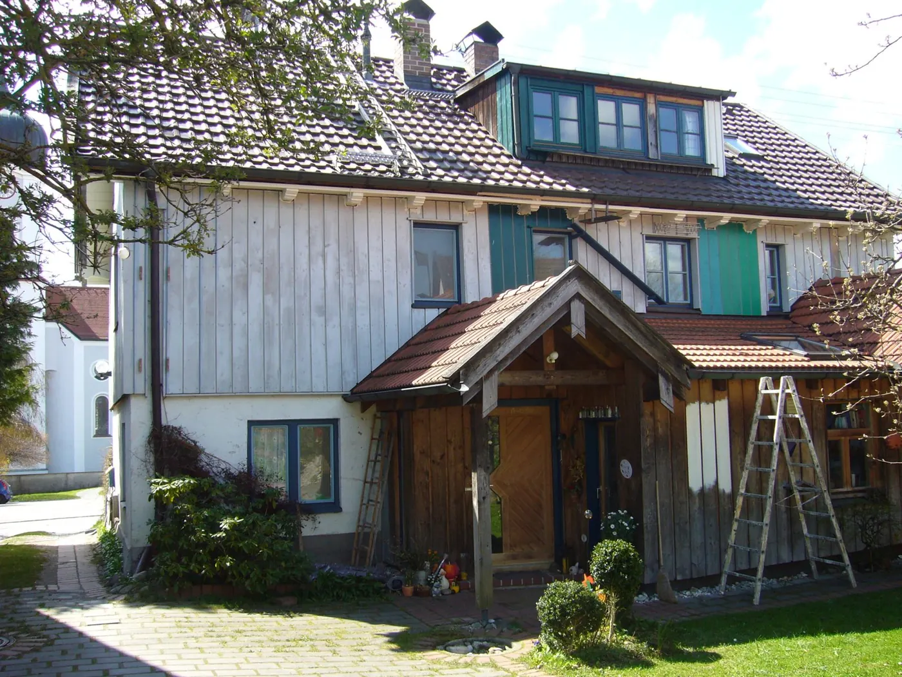
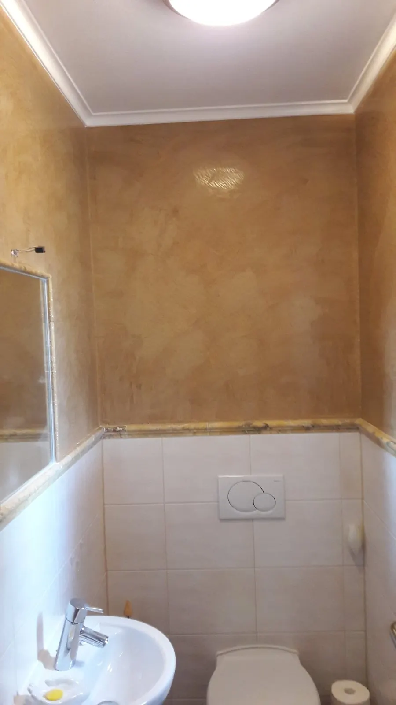
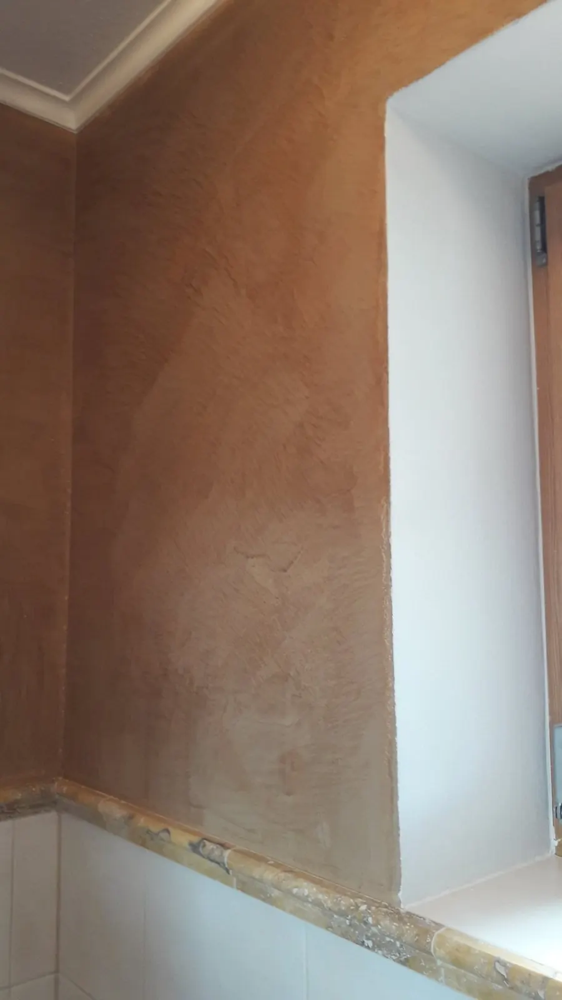
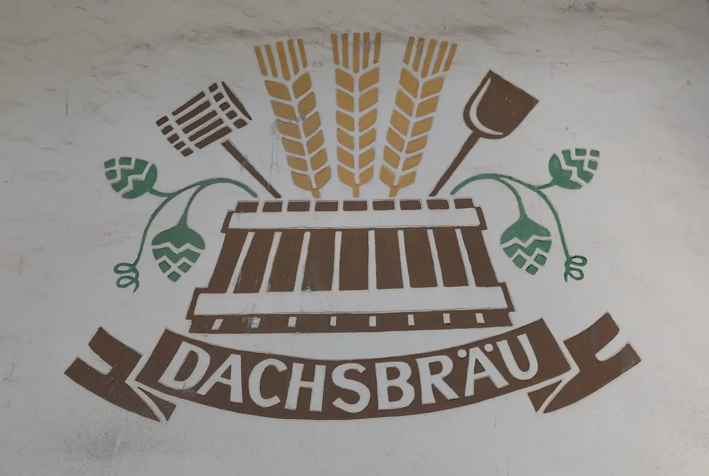
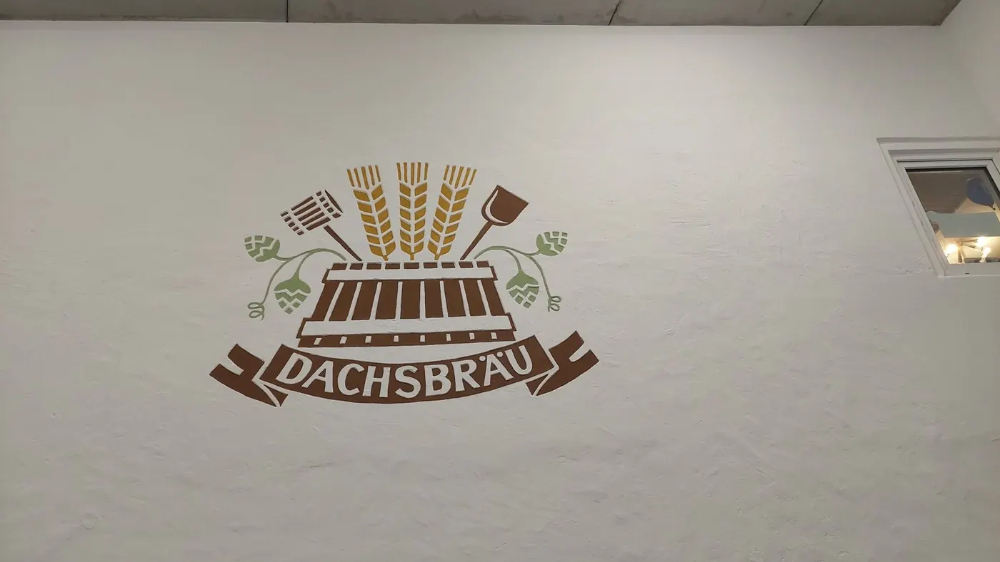
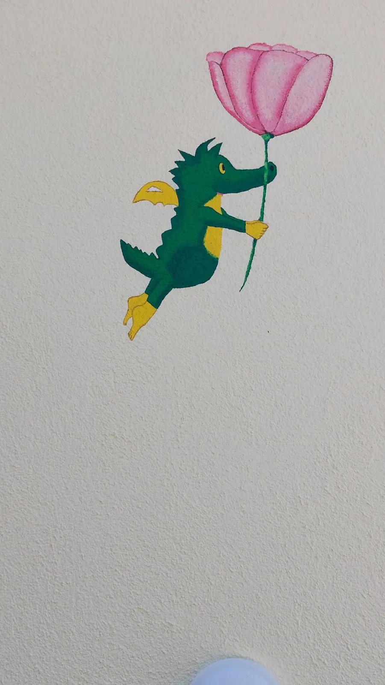
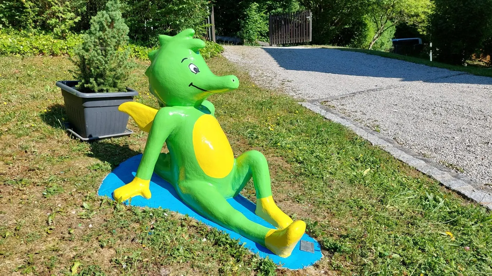
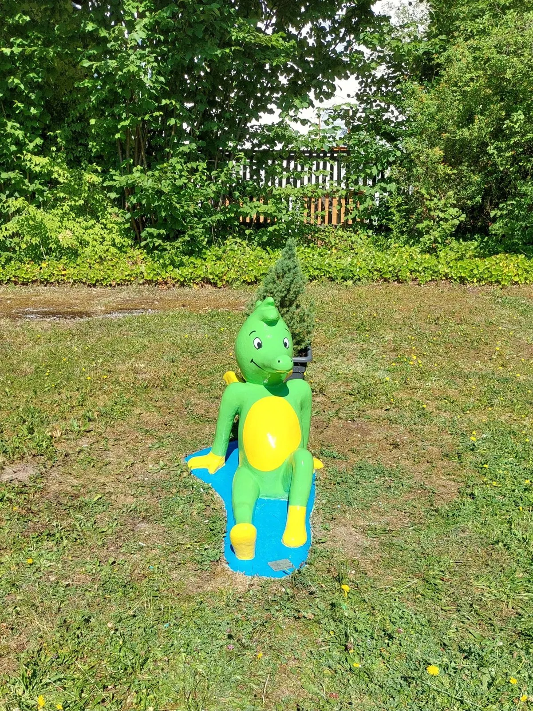
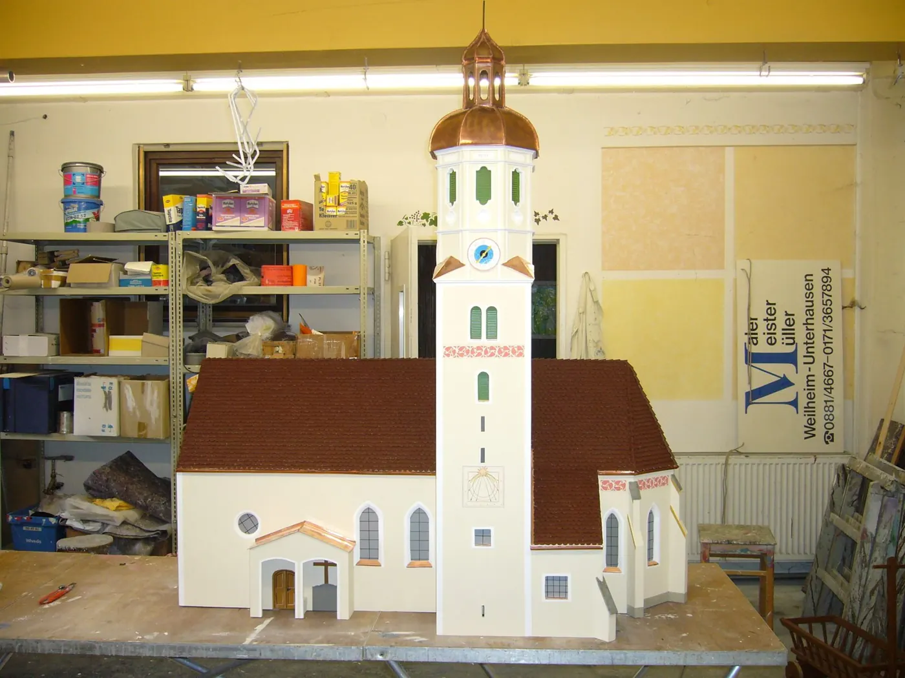
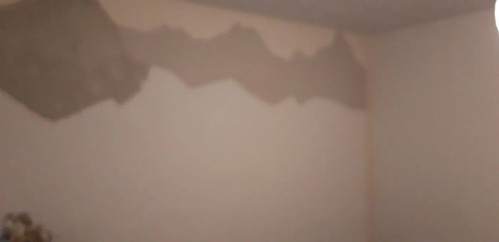

Referenzen
Arbeiten, an denen
Arbeiten, an denen
Sie vorbeifahren.
Fassaden, Holz, Innenräume, Tapeten und Schrift aus Weilheim und Umgebung — ein Ausschnitt aus fünf Jahrzehnten.
ReferenzenWählen Sie,
Wählen Sie,
was Sie sehen möchten.
38 Projekte in sechs Bereichen. Ein Klick oben zeigt nur diesen Bereich, ein Klick aufs Bild zeigt alle Fotos des Projekts.















Ihr Objekt könnte das nächste sein.
Erzählen Sie uns davon — wir kommen vorbei und schauen es uns an.